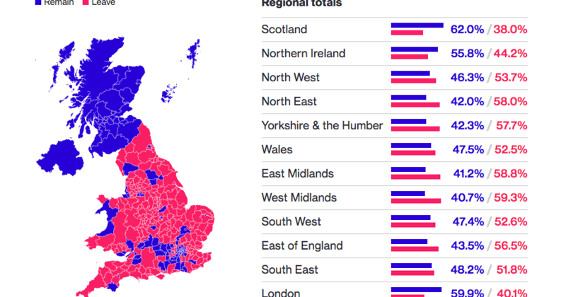
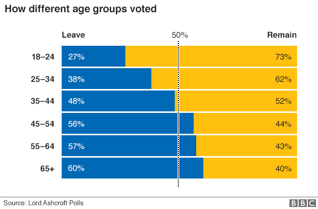

BREXIT
You're about to read the English version of the article. You can read the Italian version clicking the button in the banner on top.
There was an electoral campaign that exposed the different arguments in favor of leaving or staying the European Union. This electoral campaign was aired as an advertisement, ran on various social networks and posters were hung for the cities; all of this influenced the choices of British citizens even if everything that was written there was not entirely true and right. These slogans were a way to influence people to vote yes, without them really knowing what they were voting for. In fact, after the referndum of 23rd June, many people asked to return to the polls because they realized they did not understand the importance of being within the European Union and the importance of this referendum. But ex Prime Minister Theresa May said “brexit is brexit” and from this moment all the negotiations to leave Europe began.
The propaganda to leave the EU quoted:
- If we vote leave, we will take back control and can spend our money on our priorities.
- We need to take back control of our borders so we decide who can come here, and who can’t.
- We can control immigration by imposing our rules for controlling entry.
- We will save over £ 3,000 million a week from investing in the country's public facilities such as schools and hospitals instead of supporting the EU facilities. For example in the NHS and not in the EU.
- We will be able to trade with the whole world and with our allies such as Australia, New Zealand and India, without the trade rules imposed by the EU.
- We can make our own laws.
- We are the 5th biggest economy in the world and the 4th largest military power in the world. Therefore we can be a normal democracy which stands on our own two feet.
Here's the lies about staying in the EU:
- Voting to stay in the EU is a threat to our jobs and our security.
- Immigration will continue to be out of control. Many immigrants come from the poorest countries in the European Union, for example from Turkey, in search of a better life.
- We will have to keep bailing out the € because it is always in crisis. The countries that use the Euro already have a build-in majority, meaning they can always outvote us. We will be paying the bill for the Euro's failure.
- The European Court will still be in charge of our laws.
The results of referendum
The turnout of the referendum was 72.2%, with over 30 million people expressing their preference. In Scotland and Northern Ireland, the new population voted to stay, but the aggregate vote still won Leave with an overall percentage of 51.9%.
UK's Issues and its Compromises with the EU
The exit of the United Kingdom from the EU will have consequences not only on the British but on the entire world economy, in fact, Brexit has brought many problems to the United Kingdom for which, during the transition period, compromises will be sought with the EU there will be an inevitable no-deal.
For two months it seems that the two sides have entered a dead end, with each asking the other to give something to reach an agreement. But without diplomatic efforts there would be serious economic consequences for both the EU and the UK and the UK could suffer the heaviest losses. On 13 December 2020, formally the last day of negotiations between Ursula von del Leyen and Boris Johnson, it appears that the negotiations on the new commercial agreement will continue indefinitely.
Negotiations are proceeding with difficulty, especially on the so-called level playing field, that is the rules that should prevent British companies from competing unfairly with European ones. In recent days, the European negotiators had asked the British counterpart to introduce a clause to oblige the United Kingdom to keep its environmental and labor standards updated in the medium to long term: but the British negotiators had accused the European Union of actually wanting to maintain the country fully aligned with current European standards.
The negotiators are also discussing the access into British waters by European fishermen. The European Union has state that the denied access to their fishing vessels into UK waters will cause for the British fishermen the inability to sell their goods on European markets. The United Kingdom argues that what happens in its waters cannot be decided by entities now external such as the European Union. The British government has also confirmed that the navy is preparing to patrol the waters in the event that an agreement is not reached.
Another negotiation point on which there does not seem to be a solid agreement yet concerns the mechanisms that the United Kingdom and the European Union should adopt to resolve any legal disputes.
People

Margaret Tatcher
She was a British stateswoman who served as Prime Minister from 1979 to 1990.

David Cameron
He is a British politician who served as Prime Minister of the United Kingdom from 2010 to 2016.

Theresa May
She is a British politician who served as Prime Minister of the UK from 2016 to 2019.

Boris Johnson
He is a british politician, Prime minister of the UK from 2019.

Ursula von der Leyen
She is a German politician who is the president of the European Commission from 2019Ursula Gertrud von der Leyen is a German politician, member of the CDU and President of the European Commission since 1 December 2019. Notoriously pro-European, prior to her appointment Ursula Von der Leyen said that she considers Brexit "a bubble of empty promises inflated by populists" and "a loss for all" and declared that the no deal, or the hypothesis of a UK exit without an agreement with the EU, "is the worst possible scenario".
Brexit effects
On 19/12/2020 the British parliament warns that the government is not yet able to tell companies, traders and citizens with certainty what will happen to the sectors involved. From this date, there are only 12 days left for the end of the transition period but it is certain that the UK is not sufficiently prepared for the exit from the single European market. Britain and the Europian Unioneach hailed the Trade and Co-operation Agreement sealed on Christmas Eve as a triumph for their negotiators which secured their interests after Brexit on January 1st. But the deal, which covers issues like security, energy, transport and social welfare as well as trade, involved compromises on both sides and leaves Britain with a significantly weaker economic relationship with the EU.
BORDERS
from 2021 a border will return between England and the European Union. Being an island, the country is already separated from the rest of the continent today. However, it will take a physical border between Northern Ireland, which belongs to the UK, and the Republic of Ireland, a member state of the EU. Planes and ships already have to carry out border checks and customs operations when they arrive in the UK today. Until the end of December, there is a temporary solution, the backstop, that makes sure there is a soft border between Ireland and Northen Ireland.
SCOTLAND
Scotland is the most pro-European nation in the UK and has no desire to say goodbye to Brussels. The only way, according to Prime Minister Nicola Strugeon, is a referendum to bring Edinburgh back to Europe and for Scotland to become an independent nation. But the UK continues to decline this proposal. Scotland will try to influence the negotiations in ways that could lead to Scotland, the UK and the EU. And in particular they will continue to emphasize the importance of having closer trade relations possible.
PASSPORT AND VISA
From January 1st 2021 the United Kingdom will become a foreign country in all aspects and from February 1st, formally the United Kingdom will no longer be part of the area of free movement of people and goods. Until now and for the transition period, that will conclude at the end of 2020, the Identity Card will be accepted to enter and visit the country. From 2021, however, to enter the UK, for any reason, you will need a passport. In addition, a visa will therefore be required to live and work in the country. Finally, if you wish to visit the United Kingdom for a short holiday, a 3 month tourist visa stamp will be placed on your passport at your arrival in the airport, allowing you to stay in the country without need to apply for a visa in advance.
TRADE IN GOODS
At the heart of the deal is tariff-free, quota-free access to each other’s market for goods, making it more expansive than any trade deal the EU has previously agreed with other major economies. But Boris Johnson’s assertion that the deal also eliminates non-tariff barriers to trade is not accurate. The two sides have agreed to introduce trusted trader schemes and self-verification systems to reduce the impact of the hard customs and regulatory border that will apply to all parts of the United Kingdom except Northen Ireland from January 1st. But there will still be checks and increased bureaucracy which will make trade costlier and more cumbersome and British produce authorisations will no longer be automatically accepted by EU regulators
STUDENTS AND ERASMUS
a visa will also be required for students arriving in the country for short study holidays. While a completely different story concerns universities and Erasmus is eliminated. They will introduce its own scheme named after the computer scientist Alan Turning It will remain part of the Horizon Europe scientific research initiative.
IMMIGRATION
there will be no limits to legal immigration, but only if the immigrant person will have a contact with a UK company previous entry the country and the payment must to be more than 30 thousand pounds a year. The measure serves to limit the entry of unskilled labor and encourage the entry of skilled foreign workers.
EU CITIZENS LIVING IN THE UK
In the UK today there are many people from other EU and non-EU countries. Citizens who have lived in Great Britain for at least 5 years will be granted the opportunity to apply for a permanent residence permit (no later than December 2020). On the other hand, those who have resided in the country for less than 5 years will have to apply for a temporary permit which will only be valid for five years. European citizens who fail to comply will risk being thrown out of the UK, according to Johnson's hard line. Anyone wishing to move to the UK will only be admitted after proving that they have already obtained a job. However, every European citizen will have to pay a fee of 625 pounds to the national health service.
FISHERIES
Fishing was among the most contentious issues in the negotiations, the last to be agreed and the only one where Britain was clearly in the stronger position. But the outcome involved a huge climbdown for Johnson, who until a few weeks ago was demanding an 80 per cent reduction over three years in the value of fish caught in British waters. The EU’s opening demand for no change in its current access to British waters was plainly unrealistic but under the deal, European boats will lose only 25 per cent of their catch, with the changes phased in over 5½ years. After that, quotas for EU boats will be worked out in annual negotiations but if Britain dramatically limits access to its waters, the EU can retaliate by closing EU waters to British boats or imposing tariffs. The bloc dropped a demand that it should be able to impose sanctions on other elements of British trade in response to any dispute over fisheries.Timeline
Here's a timeline
| Date | Event |
|---|---|
| 1957 | On March 25, 1957, the Treaties of Rome were signed, considered as the birth certificate of the great European family. The first establishes a European Economic Community (EEC), the second a European Atomic Energy Community, better known as Euratom. Agreement |
| 1963 | UK asks to join the EEC. |
| 1973 | UK joins the European economic community. |
| 1975 | Referendum on the permanence of the United Kingdom in the European Communities and ended with an indication of approval with 67.23% of the consent of the British. |
| 1984 | Tensions between the EEC and the UK exploded when Conservative Prime Minister Margaret Thatcher announced that she wanted to reduce British payments to the EEC budget. |
| 1993 | Maastricht Treaty which entered into force and created the European Union (EU) based in Brussels, of which the EEC, renamed simply the European Community (EC) was the main component. |
| 1997 | General elections in the UK. They saw the victory of Tony Blair's Labor Party, who became Prime Minister, was strongly pro-European and worked to rebuild ties with the rest of Europe while in office. |
| Late 90s | Europe and the UK are fighting for beef as Brussels imposed a ban on British beef in the midst of the "mad cow" scare and British chocolate. |
| 1999-2000 | The general EU ban has been lifted. After a battle that lasted 27 years, the European Court of Justice in Luxembourg was victorious, British chocolate and beef could be sold to the rest of Europe. |
| 2007 | The Lisbon Treaty, also known as the Reform Treaty and officially the Lisbon Treaty amending the Treaty on the European Union and the Treaty establishing the European Community, is one of the treaties of the European Union, which has made extensive changes to the Treaty on European Union and the Treaty establishing the European Community.Compared to the previous Treaty, that of Nice, it abolishes the so-called "three pillars", strengthens the democratic principle and the protection of fundamental rights, also by attributing to the Nice Charter the same legal value as the treaties. |
| 2011 | In the interest of protecting the British financial sector, David Cameron became the British Prime Minister to veto an EU treaty, there was no precedent. |
| 2013 | Cameron has promised to renegotiate EU membership if his Conservative party wins a majority in the upcoming general elections. At the same time, support among British voters was growing for the Eurosceptic, populist and sovereign British political party, which was formed in 2019. It has twenty-nine MEPs, who were originally elected to the UK Independence Party roll. (UKIP). It is led by one of these MEPs, the former UKIP leader. |
| May 2015 | After winning re-election, Cameron renegotiated UK-EU relations, including changes in migrant welfare payments and financial guarantees. |
| February 2016 | Cameron announced the results of those negotiations and fixed the data of the promised referendum that gave the UK the possibility to leave the EU. |
| 23 June 2016 | The referendum went by a slim margin from 51.9% to 48.1%, but there were strong differences in the UK. |
| October 2016 | Prime Minister Theresa May, who had taken office following the resignation of David Cameron, announced her intention to invoke Article 50 of the Treaty on European Union, formally notifying Britain's intention to leave the EU. |
| 29 March 2017 | The order has been delivered to the Council of the European Union, officially starting the two-year countdown for Britain's departure from the EU, now provisionally set for March 30, 2019. |
| 2019 | Four times this year (in January, two in March, May) Parliament has categorically rejected the plan that Ms May negotiated with the European Union for exit, known as Brexit, European states agreed twice to postpone the release date. |
| 23 May 2019 | Elections for the European Parliament are held in the UK even though Britain intends to leave. The Brexit Party, a Eurosceptic, populist and sovereign British political party, which was formed in 2019 and led by the former leader of the UKIP (UK Independence Party) was the clear winner in the UK's European election. |
| 24 May 2019 | May officially announced his resignation as a Conservative leader, unable to deliver Brexit. |
| 31 October 2019 | European leaders insisted on a longer delay this time and set October 31 as a new deadline for Brexit. |
| 12 November 2019 | Revocation accepted. |
| 31 January 2020 | The UK has left the European Union, A transition period is currently in effect until 31 December 2020. |
| 31 December 2020 | Expiration of the transition period. |
Sources
Here's our sources
 Infografica
brexit/eu-uk_relations_from_the_uk_referendum_to_a_new_trade_and_cooperation_agreement_-_infographic.pdf
Timeline
brexit/eu-uk_relations-from_the_uk_referendum_to_a_new_trade_and_cooperation_agreement-timeline.pdf
Benefits
brexit/eu-uk_trade_and_cooperation_agreement-a_new_relationship_with_big_changes-overview_of_consequences_and_benefits.pdf
Accordo finale
https://external-content.duckduckgo.com/iu/?u=https%3A%2F%2Fimage.flaticon.com%2Ficons%2Fpng%2F512%2F179%2F179483.png&f=1&nofb=1
Infografica
brexit/eu-uk_relations_from_the_uk_referendum_to_a_new_trade_and_cooperation_agreement_-_infographic.pdf
Timeline
brexit/eu-uk_relations-from_the_uk_referendum_to_a_new_trade_and_cooperation_agreement-timeline.pdf
Benefits
brexit/eu-uk_trade_and_cooperation_agreement-a_new_relationship_with_big_changes-overview_of_consequences_and_benefits.pdf
Accordo finale
https://external-content.duckduckgo.com/iu/?u=https%3A%2F%2Fimage.flaticon.com%2Ficons%2Fpng%2F512%2F179%2F179483.png&f=1&nofb=1